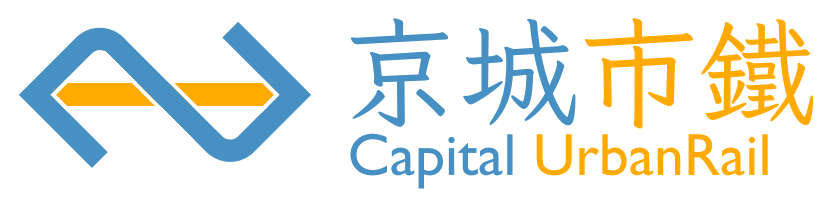

ROUTE MAP & STATIONS
路線與車站
查詢京城市鐵各路線、主要車站、轉乘資訊及無障礙服務。若需完整路網圖，請進入地圖下載頁。
TRANSFER
轉乘資訊
主要轉乘站包含寰宇門、東湖南、江岸車站與南水庫。請依站內標示及現場人員指引轉乘。
ACCESSIBILITY
無障礙資訊
無障礙設施資訊請以各站公告、站內標示及服務櫃台說明為準。

查詢京城市鐵各路線、主要車站、轉乘資訊及無障礙服務。若需完整路網圖，請進入地圖下載頁。
主要轉乘站包含寰宇門、東湖南、江岸車站與南水庫。請依站內標示及現場人員指引轉乘。
無障礙設施資訊請以各站公告、站內標示及服務櫃台說明為準。